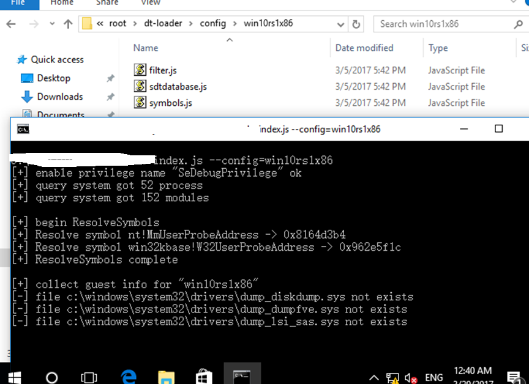
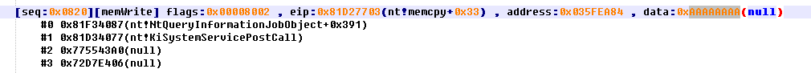

前言
2017年6月补丁日，修复了我们之前报告的6个内核信息泄漏漏洞 , 文章末尾有细节。
前年我演示过如何用JS来fuzz 内核，今天我们要给大家带来的是不依赖fuzz，来自动化挖掘内核漏洞。
从最近的几个月工作里，选取了一个小点，说下内核信息泄漏类型漏洞的挖掘。
背景
windows vista 之后，微软对内核默认启用了了ASLR ，简称KASLR.
KASLR 随机化了模块的加载基址 , 内核对象的地址等，缓解了漏洞的利用。
在win8 之后，这项安全特性的得到了进一步的增强。
引入 nt!ExIsRestrictedCaller 来阻止Low integrity 的程序调用某些可以泄漏出模块基址，内核对象地址等关键信息的函数。
包括但不限于:
NtQuerySystemInformation
* SystemModuleInformation
* SystemModuleInformationEx
* SystemLocksInformation
* SystemStackTraceInformation
* SystemHandleInformation
* SystemExtendedHandleInformation
* SystemObjectInformation
* SystemBigPoolInformation
* SystemSessionBigPoolInformation
* SystemProcessInformation
* SystemFullProcessInformation
NtQueryInfomationThread
NtQueryInfomationProcess
以上是传统的可以获取 内核模块地址和内核对象地址的方法 , 作为内核正常的功能。
但对于integrity 在medium 以下的程序，在win8 以后调用会失败。
KASLR 作为一项漏洞利用缓解措施，其中的一个目的就是为了使得构建通用的ROP-CHAIN 更为困难.
作为漏洞的利用者来说，挖掘出信息泄漏漏洞，来直接泄漏出所需要的模块基址，就是直接对抗KASLR的办法。
特点
作为内核漏洞的一种，在挖掘的过程中有特殊的地方。比如，对于传统内存损坏类漏洞而言，漏洞本身就会影响系统的正常运行，使用verifier等工具，能较为方便的捕获这种异常。
但是信息泄漏类型的漏洞，并不会触发异常，也不会干扰系统的正常运行，这使得发现它们较为困难。
漏洞是客观存在的，我们需要做的以尽可能小的成本去发现它们。
挖掘思路
泄漏发生时，内核必然会把关键的信息写入用户态的内存，如果我们监控所有内核态写用户态地址的写操作，就能捕获这个行为。
当然系统并没有提供这个功能，这一过程由@pjf的一个专门的基于硬件虚拟化的挖掘框架进行捕获。
为了不干扰目标系统本身的操作，我在虚拟机里执行监控，获取必要的信息，在写成log后，再在宿主机进行二次分析。

在物理机里，解码日志并加载符号，做一些处理之后

就得到这样的一批日志。

二次分析
现在我们有了一段实际运行过程中内核写到用户态内存的所有记录。这里面绝大多数都是正常的功能，
我们需要排除掉干扰，找出数据是关键信息的。
这里主要用到了两个技巧。
污染内核栈
毒化或者说污染目标数据，是一种常见的思路。在网络攻防里，也有ARP 和DNS缓存的投毒。
这里所说的内核栈毒化，指的就是污染整个未使用的内核栈空间。如果某个内核栈上的变量没有初始化，
那么在这个变量被写到到用户态时，写入的数据里就有我所标记的magic value ,找出这个magic value所在的记录，就是泄漏的发生点。
同时我注意到，j00ru 在他的BochsPwn项目里也曾使用了类似的技巧。
KiFastCallEntry Hook
为了有时机污染内核栈，我Hook 了KiFastCallEntry ， 在每个系统调用发生时，污染当前栈以下剩余栈空间。

首先使用 IoGetStackLimits 获取当前线程的范围，然后从栈底部到当前栈位置的整个空间都被填充为0xAA 。
这样进入系统调用之后，凡是内核堆栈上的局部变量的内容，都会被污染成0xAA。
污染内核POOL
类似的，对于动态分配的内存,我采用hook ExAllocatePoolWithTag等，并污染其POOL内容的方式。
这样，无论是栈上的，还是堆上的，只要是未初始化的，内容都被我们污染了。
如果这个内核堆栈变量没有正确的初始化，就有可能将这个magic value写入到用户态的内存。结合我们捕获的日志，就能马上发现这个信息泄漏。
为了排除掉巧合，使用了多次变换magic value 如 0xAAAAAAAA , 0xBBBBBBBB 的办法来进行排除误报。
排除干扰之后的一次典型的结果如下
可以看到，在某次短暂的监控过程中，就抓到了系统里 161 次泄漏。
当然这没有排重，并不是有这么多个独立的漏洞，而是某些漏洞在反复的泄漏。
此时我们就抓到了一个真正的信息泄漏漏洞，有堆栈信息，再辅以简单的人工分析，就能知道细节，
这也是 CVE-2017-8482 背后的故事。
差异比对
对于未初始化堆栈所导致的内核信息泄漏，我们可以用污染然后查找标记的方式发现。
对于直接泄漏了关键信息的，比如直接写入了模块，对象，POOL地址类型的，就不能用这种方法发现了。
在系统运行过程中，内核本身就会频繁的向用户态写入数据，很多数据在内核地址范围内，但实际上并不是有效的地址，只是一种噪音数据。
这种噪音数据有很多，像字符串，像素，位置信息等都有可能恰好是一个内核地址，我们需要排除掉这些噪音，发现真正的泄漏。
这里我们过滤出一部分有意义的地址，比如
- 模块地址，必须在内核模块地址范围内。
- object地址
- POOL地址
在环境改变，比如重启系统之后 ，必须还能在相同的位置泄漏相同类型的数据。
在排除掉系统正常的功能如 NtQuerySystemInformation 之类的之后，得到的数据，可信度就非常高了。
泄漏模块地址
以 CVE-2017-8485 为例，比对之后得到的结果

可以看到，此时的结果就非常直观了，相同的堆栈来源在相同的位置下，都泄漏了nt!ObpReferenceObjectByHandleWithTag+0x19f
这个地址。
泄漏object地址
由于泄漏object地址和POOL地址的本月微软还没来得及出补丁，不能描述细节。
可以看到其中的一个案例，某个函数泄漏一个相同object的地址。
值得一提的是，对于这种不是从堆栈上复制数据产生的泄漏，是无法用污染堆栈的方法发现的。

最后
可以看到，我们不需要专门的fuzz，仅仅依靠系统本身的运行产生的代码覆盖，就发现了这些漏洞。
任何程序的正常运行，都能提高这个覆盖率。
事实上，在实际的挖掘过程中，我仅仅使用了运行游戏和浏览器的办法就取得了良好的效果 , 一局游戏打完，十个内核洞也就挖到了。

本月案例
CVE-2017-8470

CVE-2017-8474
CVE-2017-8476

CVE-2017-8482

CVE-2017-8485
